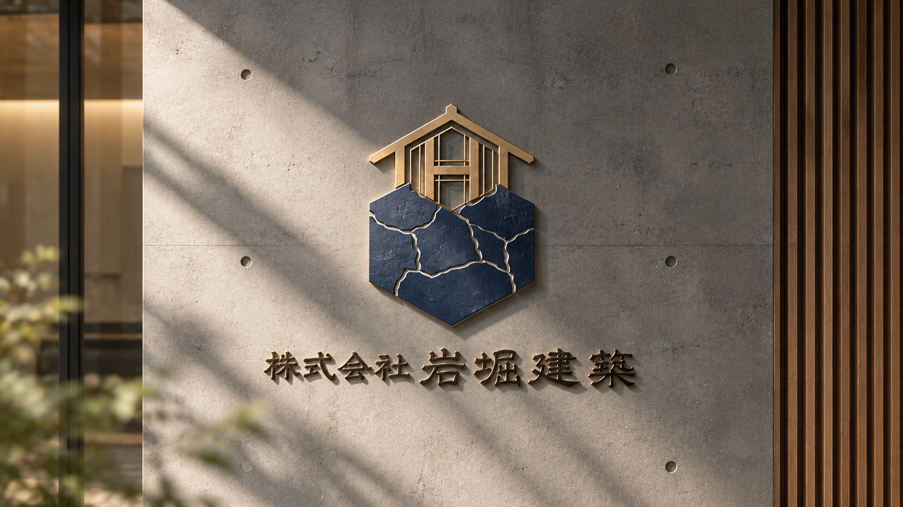
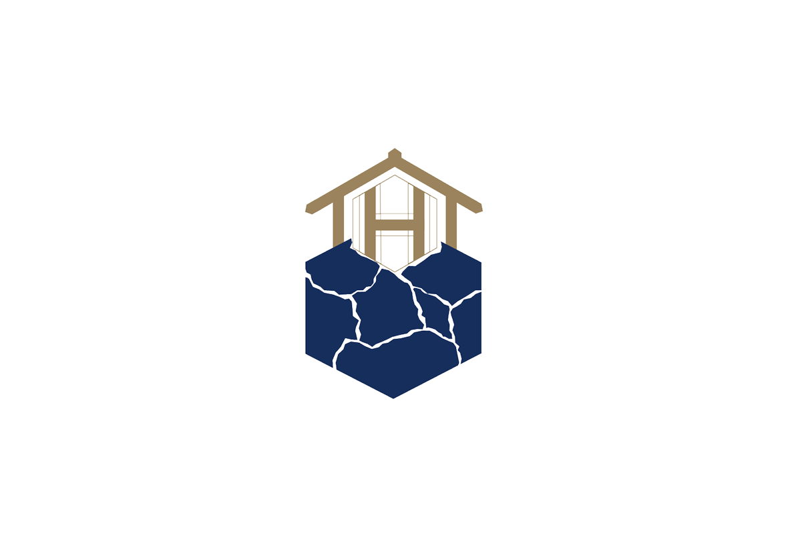
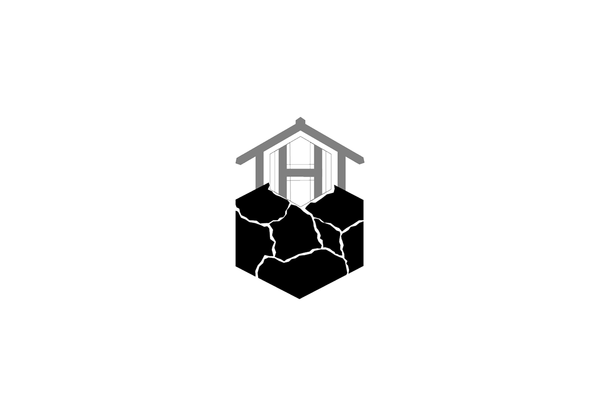
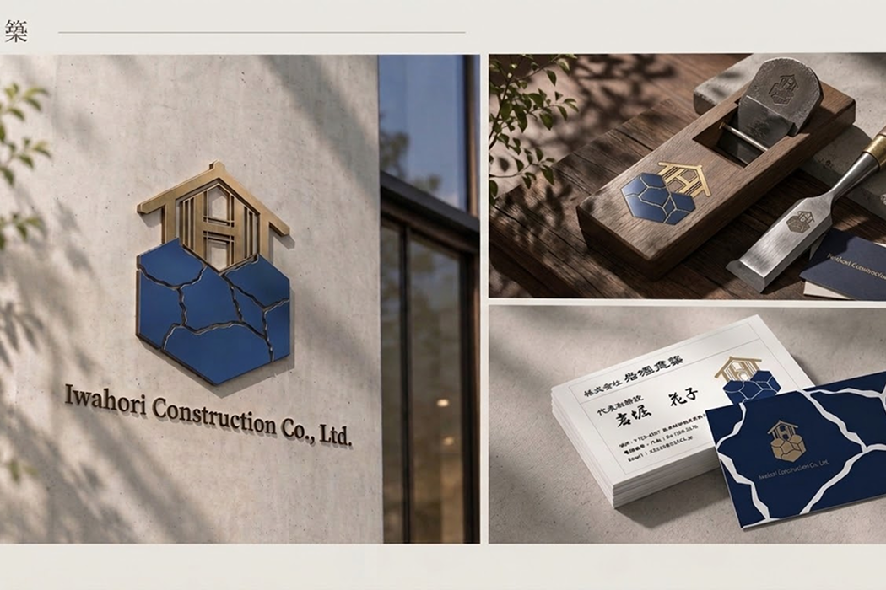

Iwahori Construction Co.,Ltd

構造の美しさを、信頼という形へ。。建築のたしかさと、企業としての誠実さを。
株式会社岩堀建築のコーポレートロゴを制作。 建築会社として大切にしている信頼感や堅牢さを表現するとともに、企業名の文字をモチーフに、 建築の構造美を取り入れたシンボルマークをデザインしました。企業の顔としての長く親しまれる ことを意識し、視認性と凡用性にも配慮しています。
01 PRIMARY LOGO

02 MONOCHROME

03 REVERSE

建築の象徴である「家」と、企業の文字を組み合わせ、一つのシンボルとして表現しました。 上部には建物を支える木造の骨組みをモチーフに取り入れ、建築に対する確かな技術と誠実さ を表現。下部には、石材を思わせる幾何学的なフォルムを配置し、強固な基盤や揺るぎない信頼を 象徴しています。異なる素材感をひとつの形にまとめることで、建築の温かみと堅牢さが共存する デザインに仕上げました。
